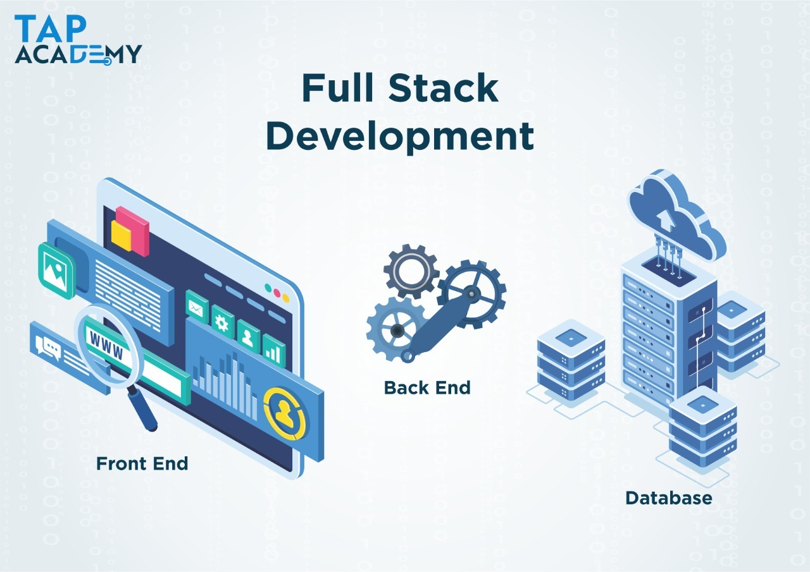

JAVA FULLSTACK DEVELOPMENT

A full-stack developer is a person who can develop application's backend and frontend. Java full-stack is basically a term used for a web developer that uses Java to develop the entire technology stack is referred to as Java full stack developer.
What Is Java Full-Stack?
If you’re wondering what Java full-stack is, we’re here to break it down for you.
This is a two-part question: Firstly, what is Java?
Java is a coding language, like Python or JavaScript. All software programming is done through coding languages, and Java is one of the top languages in today’s tech fields.
Secondly, what is a full-stack?
Full-stack refers to an entire computer system – the frontend that the users see and interact with, and the backend that mainly the developers see.
What Is a Java Full-Stack Developer?
Web developers can specialize in front-end programming (user-facing programming), back-end programming (server-side programming), or both. When a web developer knows both front-end and back-end programming, this is called full-stack programming.
So, a Java full-stack programmer is a developer who is trained in the Java programming language and technologies and knows both front-end and back-end development.
What Does a Full-Stack Java Developer Do?
A full-stack Java developer is responsible for programming back-end code and software systems and designing the front-end areas of software or websites in the Java coding language.
Full-stack Java developers often lead teams that work on software, websites, or applications. In some cases, they work on these things alone.
7 Full-Stack Java Developer Skills
If you’re thinking of becoming a Java full-stack developer, some specific skills will serve you particularly well. We’ve made a list of seven full-stack Java developer skills.
database
1. HTML and CSS
Learning HTML and CSS is essential for any career path in web development.
HTML (HyperText Markup Language) helps with creating web content and CSS (Cascading Style Sheets) is a customization tool that helps with website design.li
HTML and CSS skills work together to help developers create functional and visually pleasing websites.
2. Javascript
This one may be obvious, but it needs to be said!
To be a Java full-stack developer, you need to know the Javascript coding language. It’s one of the most popular coding languages today, so knowing it can serve you well in many jobs and projects.
In fact, Statista found that nearly 70% of developers used Javascript in the past 12 months.
Javascript is a front-end coding language – not to be confused with Java, which is a back-end coding language.
3. Git and GitHub
GitHub is a development platform where people can build and maintain software. It uses Git to provide Internet hosting, which is software that tracks changes within files.
Both programs allow for easy web development, collaboration, and communication, especially within teams.
Git and GitHub are very different tools, so don’t get them confused!
4. Web Architecture
Web architecture is the process of designing a website or program. Like a house, websites and programs need designing, planning, creating, and building to make an amazing final product.
Web architecture takes the user’s experience into mind so that every project is functional, navigational, and informative for users.
5. Backend Languages
If you’re going to be a full-stack developer, you need to know back-end languages.
There are many different back-end languages, and the more you know the more in demand you can be.
Consider learning multiple back-end coding languages, such as Ruby, PHP, Java, Net, and Python.
6. Spring Frameworks
The Spring Framework is an open-source application that supplies infrastructure support for developers working on Java applications. Hence why this is an essential skill to know!
Knowing all the tools that pair with Java will make you a well-rounded full-stack Java developer.
7. Databases and Web Storage
Another major aspect of any developer job is understanding databases and web storage.
After all, this is where important aspects of your projects will live!
Cloud-based storage is a great skill to master, as are relational databases. Developer teams often work in collaboration, so being able to store and access data efficiently will help your team and your projects glide to successful completion.
5 Top Java Full Stack Frameworks
There are many frameworks for developers to work with. However, you should know the best ones for the Java programming language.
Here’s a list of the top 5 frameworks you should learn if you want to become a Java full-stack developer.
Spring Boot
React JS
Angular
Node.js
Bootstrap